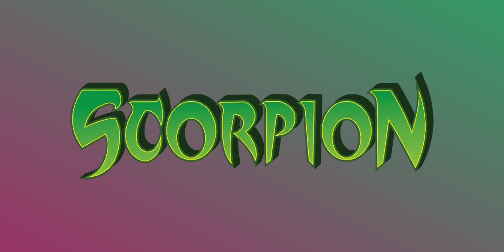
Scorpion (Mac Gargan) (Terre-616)
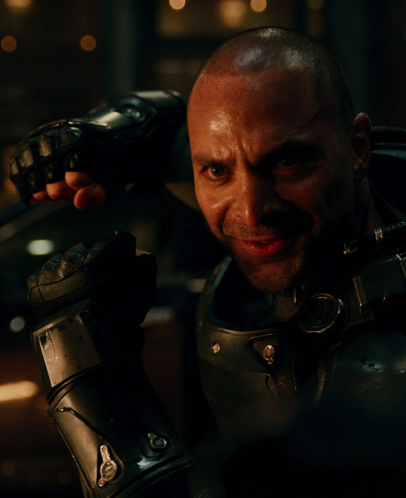
Origines :
L'ancien détective privé Mac Gargan fut un jour engagé par J. Jonah Jameson pour découvrir comment Peter Parker parvenait à obtenir toutes ses photos de Spider-Man.
Gargan traqua alors Parker pour découvrir ses secrets, mais ses efforts déclenchaient à chaque fois le sixième sens de Peter, lui permettant de l'éviter facilement à chaque fois.
Frustré, Jameson décida de mener une expérience, et paya Gargan 10 000$ pour qu'il serve de cobaye.
Cette expérience, conçue par le Dr. Farley Stillwell, un chercheur spécialisé dans les mutations animales, conférait au sujet les caractéristiques d'un autre animal.
Malheureusement, le processus dégénéra et entraîna la folie de Gargan, et la création du super-vilain connu sous le nom de Scorpion.
Au fil des années, Scorpion affronta et fut vaincu par Spider-Man à de nombreuses reprises.
La plupart de ces confrontations furent la conséquence de l'intervention de Spider-Man pour déjouer les tentatives d'assassinat contre Jameson, que Gargan haïssait depuis l'accident qui a mené à sa transformation.
Plus tard, Gargan fut engagé pour suivre l'agent Sharon Carter, membre du SHIELD, ce qui conduisit à une confrontation avec Captain America, qui le vainquit facilement.
Il s'allia au super-vilain Mister Hyde, et ils lancèrent ensemble une série d'attaques contre le SHIELD, et parviendront à enlever Sharon, mais seront rapidement retrouvés par Captain America et le Faucon, et seront neutralisés.
Lors du braquage d'une laverie automatique, la jeune super-héroïne nommée Jewel qui s'entraînait à maîtriser ses pouvoirs, fit une chute et atterrit sur la tête de Gargan, ce qui l’assomma et permettra son arrestation.

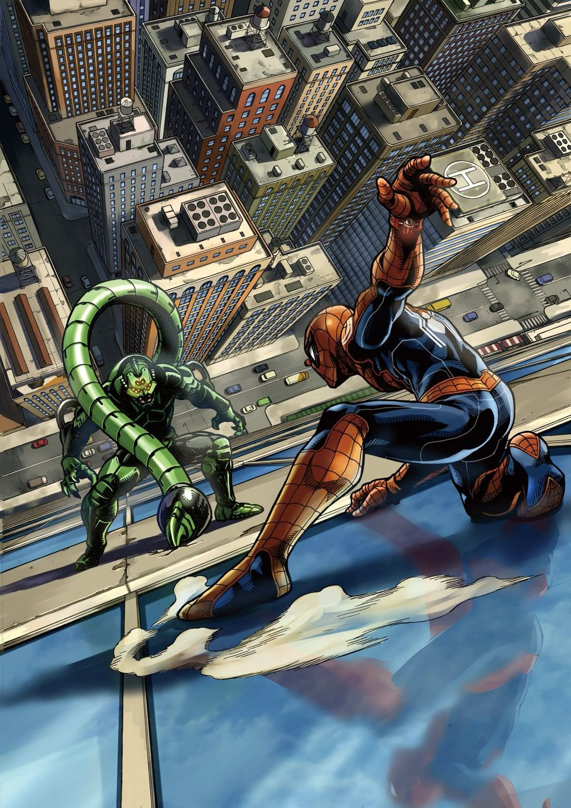
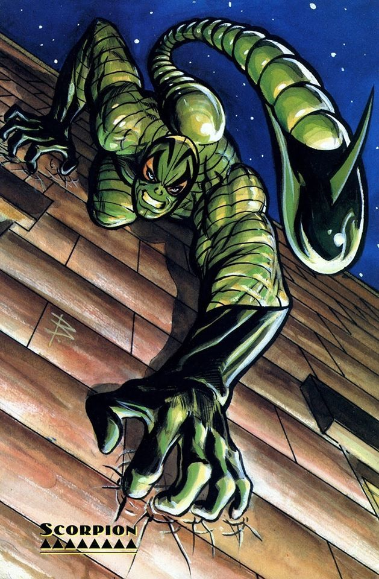
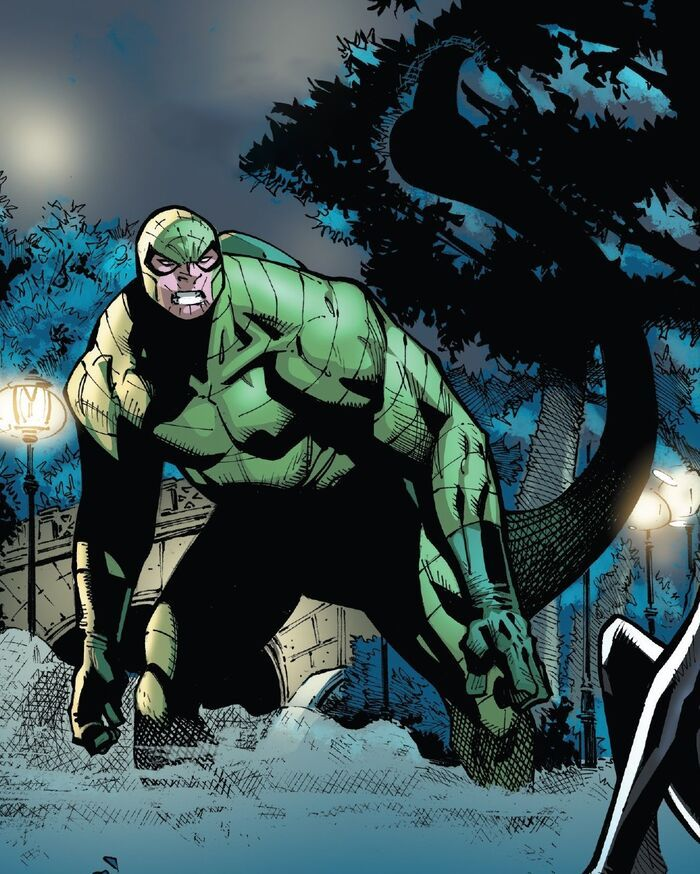

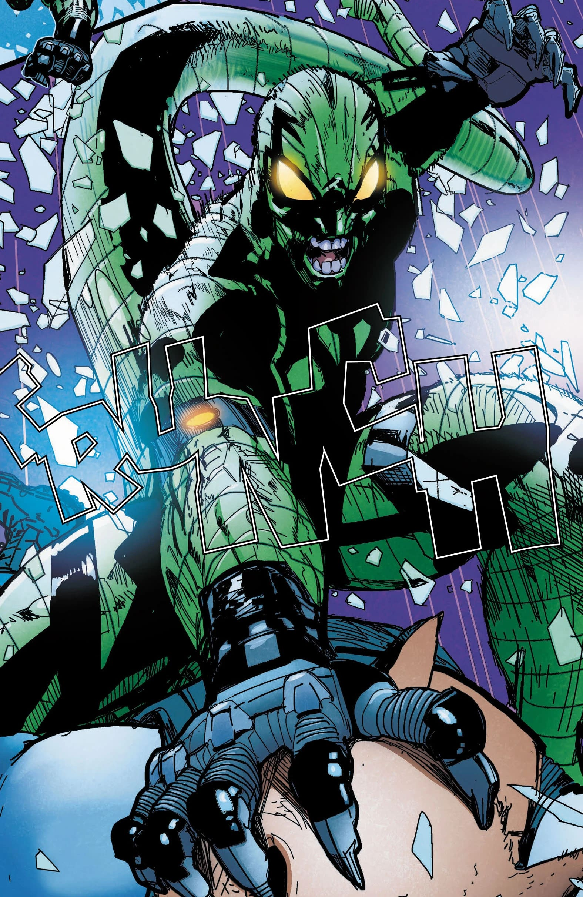
Capacités :
Mac Gargan a reçu un traitement chimique qui a augmenté ses réflexes, son endurance et sa force à un niveau bien supérieur à la normale.
Il a été armé d'un costume renforcé équipé d'une queue cybernétique de 2 mètres qu'il contrôle mentalement.
Le dard de sa queue est équipé de différentes armes, comme une poche d'acide, une lame effilée, un crochet électrique ou encore du gaz suffoquant capable de paralyser ses ennemis.

Apparence :
Le Scorpion possède une armure mécanique lourde et imposante de couleur verte, rappelant l'apparence d'un scorpion.
Il possède également une queue cybernétique d'environ 2 mètres de long, fixée dans son dos.
Cette queue longue et flexible se termine par un dard acéré capable de frapper, d'écraser ou de transpercer ses ennemis.
Il possède également un casque intégral recouvrant entièrement son visage, et possède de grands yeux jaunes, souvent luisants, qui renforcent son apparence monstrueuse.
Équipes affiliées


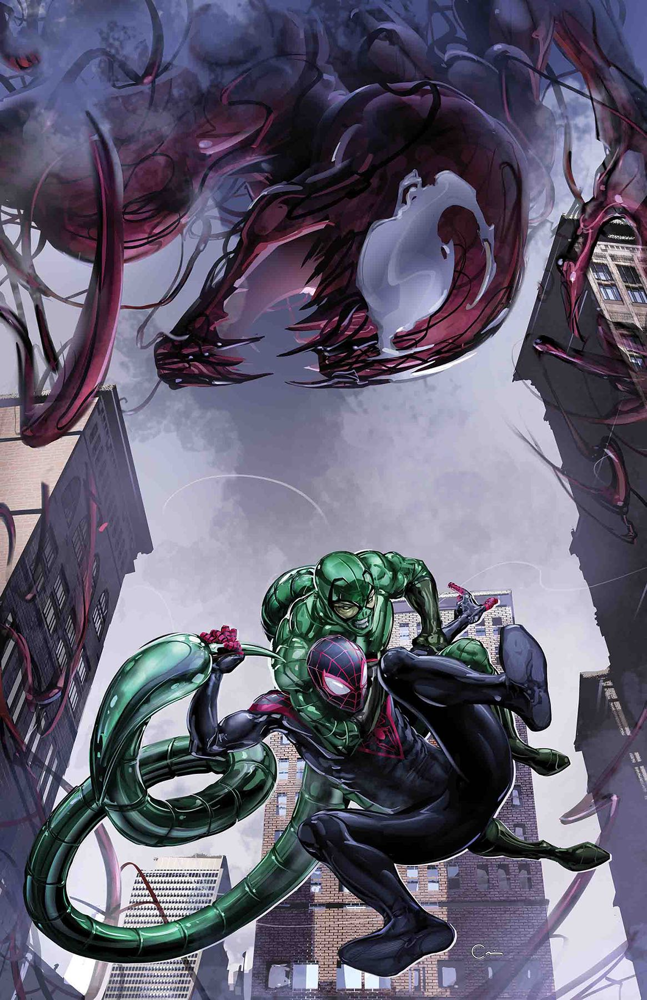
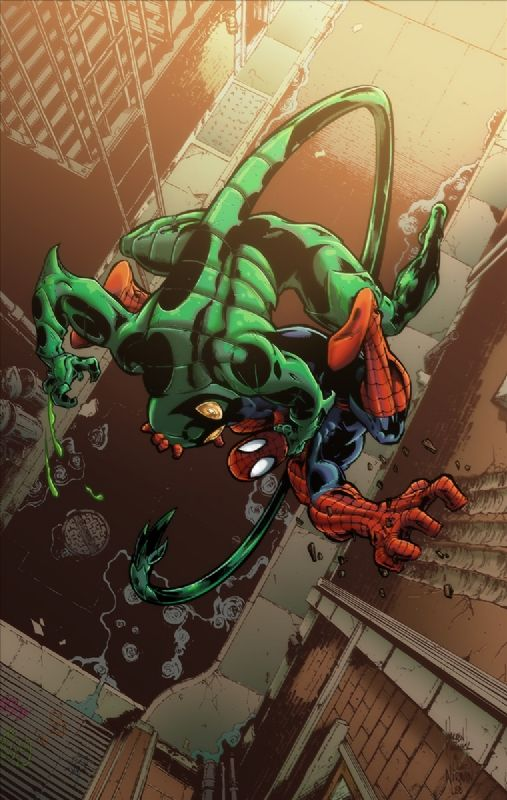
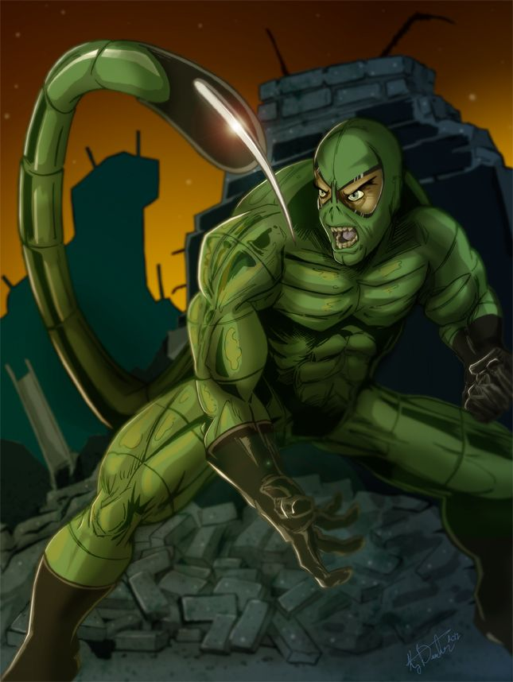
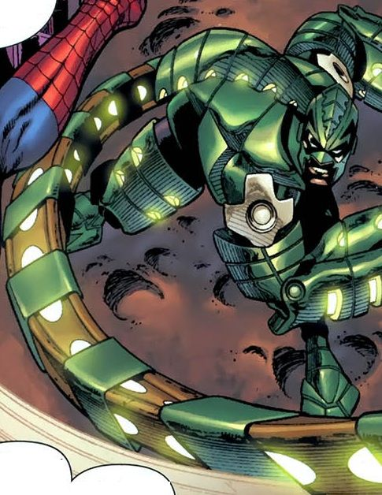
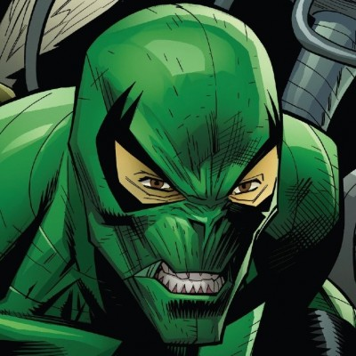
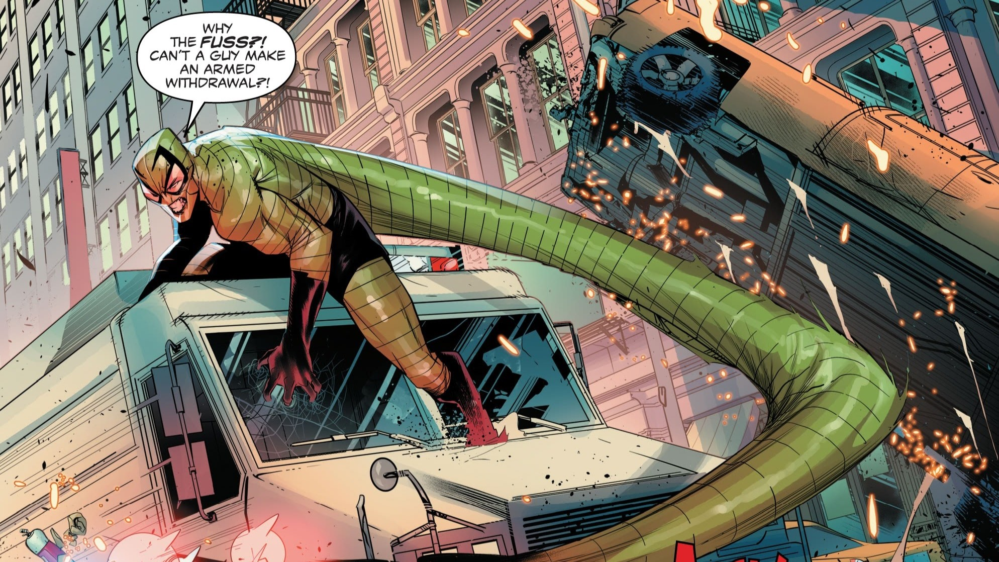
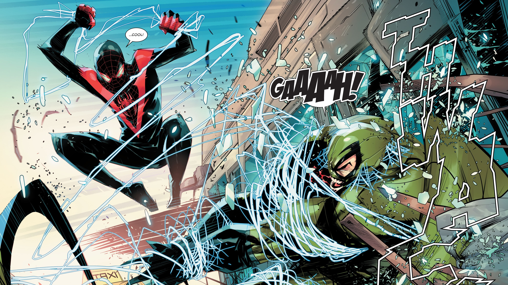
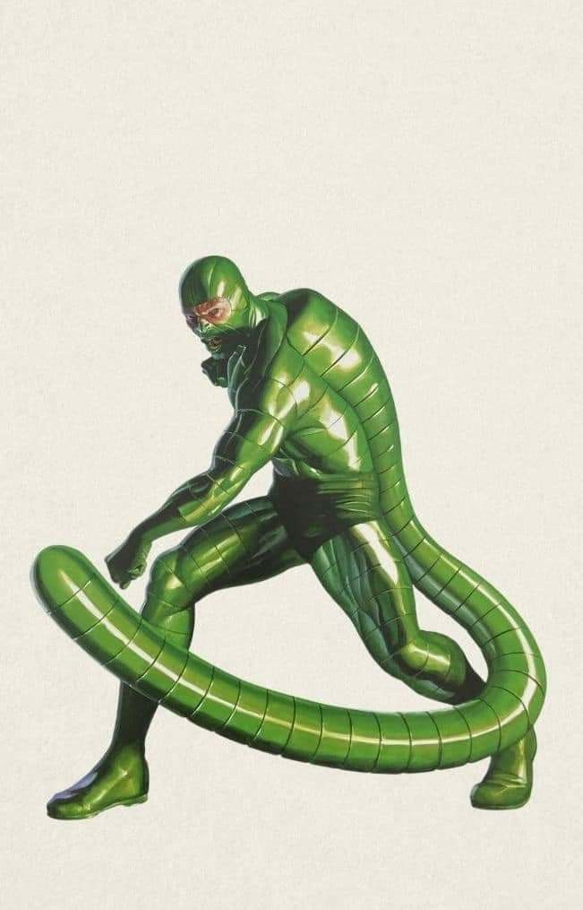